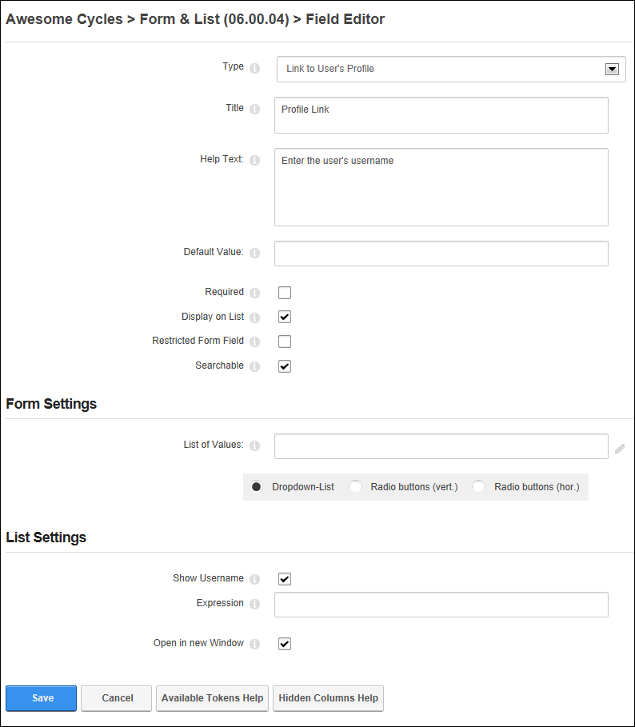
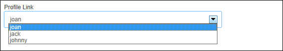
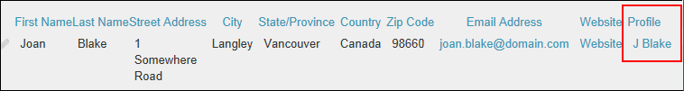

Adding a Link to User's Profile Field
How to add link to a user's profile field to a form or list using the Form and List module. This column type allows form or list editors to enter the username of a site member into the form or list and then displays the username with a link to the user's profile in the form or list. This tutorial assumes you are currently adding a Link to User's Profile field to a form or list (See "Creating a Form or List") or editing an existing URL field. See "Editing List or Form Columns"
- In the Title text box, enter a title that will be displayed on the form or list for this field.
- In the Help Text text box, enter a help message to assist users who are adding or editing the data for this field.
- In the Default Value text box, enter the default username to be displayed for this field - OR - Leave blank to display an empty field.
- At Required, if this field must be completed to submit the form or add a record to a list - OR - if this field as optional. This is the default setting.
- At Display on List, if this column is visible on the list in the normal grid view. This is the default setting. - OR - to set the field as visible to Administrators only.
- At Restricted Form Field, if this column is only visible to users/roles who have been added to the "Edit Also Restricted Columns" permission (See "Setting Form Permissions") - OR - if the column is visible to all users. This is the default setting.
- At Searchable, if this column searchable using the Search Options configured for this module. This setting has no influence whether the field gets indexed for the side wide search - OR - if the column is not included in the module search. This is the default setting.
- Go to the Form Settings section.
- In the List of Values text box, leave this field blank to allow any username to be entered - OR - Enter a definitive list of usernames (separated by a semi-colon ( ;) ) that can be selected (E.g. joan;jack;johnny) and then select how the list is displayed. Note: This setting removes the user's ability to enter other values.
- Dropdown-List: Display values in a drop down selection list. This is useful when there are a lot of values.
- Radio Buttons (Vert.: Display values in a vertical list with radio buttons.
- Radio Buttons (Hor.): Display values in a horizontal list with radio buttons.
- Go to the List Settings section.
- At Show Username, to display username - OR - to display the user's display name.
- In the Expression text box, enter an expression including tokens to change the details rendered for this field. Note: Click the Available Tokens Help button below for a list of the available tokens - OR - Leave this field blank to use the username or displayname as set in the above field.
- At Open in new window, to open the file in a new web browser window - OR - to open the file in the current web browser window. This is the default setting.
- Click the Save button to save the field and return to the Form & List Configuration page.

Adding/editing a Link to User Profile field

The Link to User's Profile column as displayed on the Edit Record page or in a form

The User Profile field displayed in a List